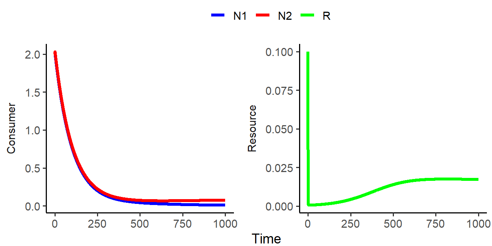
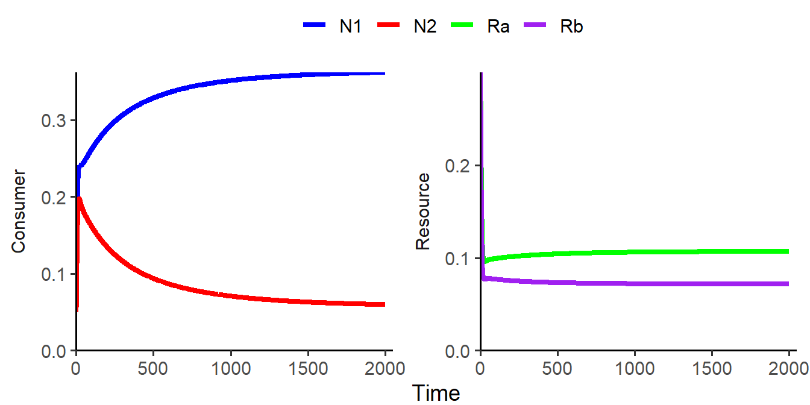
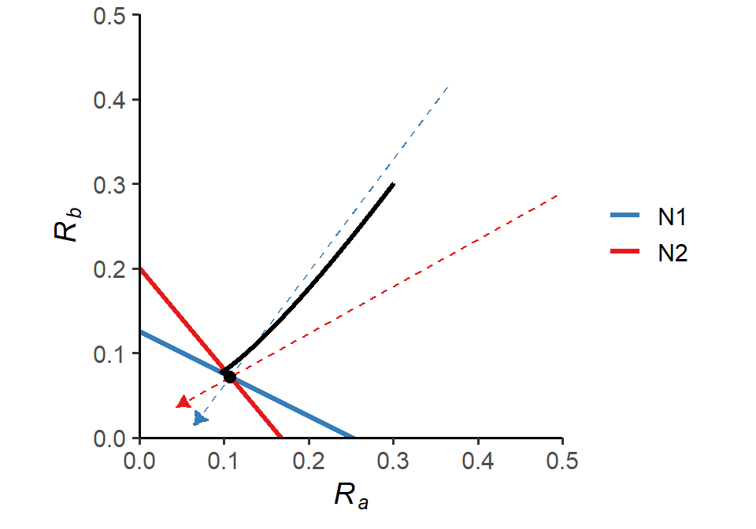
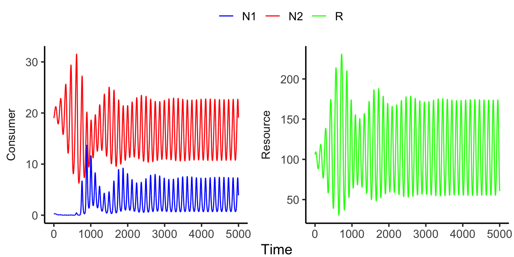

Week 14 - Resource competition
Part 1 - R* rule
In this part of the lab section, we are going to analyze the consumer-resource dynamics with two consumers and one resource: \[\begin{align*} \frac {dN_{1}}{dt} &= e_{1}a_{1}RN_{1}-dN_{1}\\ \frac {dN_{2}}{dt} &= e_{2}a_{2}RN_{2}-dN_{2}\\ \frac {dR}{dt} &= d(S_{0}-R)-a_{1}RN_{1}-a_{2}RN_{2}\\ \end{align*}\]
Please simulate the model using the parameter set (\(N_{1(0)}\) = 2, \(N_{2(0)}\) = 2, \(R\) = 0.1, \(a_1\) = 0.4, \(a_2\) = 0.6, \(e_1\) = 1, \(e_2\) = 1, \(d\) = 0.01, \(S_0\) = 0.1) and visualize the population trajectories of the two consumers as well as the resource.
Below is a plot of resource level vs. consumers’ per capita growth rate. What would you predict about the system dynamics?
library(tidyverse)
library(deSolve)
### Parameters
a1 <- 0.4
a2 <- 0.6
e1 <- 1
e2 <- 1
d <- 0.01
S0 <- 0.1
### Resource level vs. consumers' per capita population growth
data.frame(R = seq(0, 0.1, 0.001)) %>%
mutate(N1 = e1*a1*R-d,
N2 = e2*a2*R-d) %>%
gather(key = "Species", value = "Growth", N1:N2) %>%
ggplot(aes(x = R, y = Growth, color = Species)) +
geom_line() +
geom_hline(yintercept = 0, linetype = "dashed") +
labs(x = "Resource level", y = "Per capita growth rate") +
theme_classic(base_size = 14)
### Model specification
CR_model_2C_1R <- function(times, state, parms){
with(as.list(c(state, parms)), {
dN1_dt = e1*a1*R*N1 - d*N1
dN2_dt = e2*a2*R*N2 - d*N2
dR_dt = d*(S0-R) - a1*R*N1 - a2*R*N2
return(list(c(dN1_dt, dN2_dt, dR_dt)))
})
}
### Model parameters
times <- seq(0.1, 1000, by = 0.1)
state <- c(N1 = 2, N2 = 2, R = 0.1)
parms <- c(a1 = 0.4, a2 = 0.6, e1 = 1, e2 = 1, d = 0.01, S0 = 0.1)
### Model application
pop_size <- ode(func = CR_model_2C_1R, times = times, y = state, parms = parms)
### Visualize the population dynamics
pop_size %>%
as.data.frame() %>%
gather(key = "Species", value = "N", N1:R) %>%
mutate(trophic = case_when(Species %in% c("N1", "N2") ~ "Consumer",
TRUE ~ "Resource")) %>%
ggplot(aes(x = time, y = N, color = Species)) +
geom_line(size = 1.5) +
facet_wrap(~ trophic,
ncol = 2,
scales = "free_y",
strip.position = "left") +
theme_classic(base_size = 14) +
theme(strip.background = element_blank(),
strip.placement = "outside",
legend.position = "top",
legend.title = element_blank(),
plot.margin = margin(r = 5)) +
labs(x = "Time", y = NULL) +
scale_color_manual(name = NULL, values = c("blue", "red", "green"))
We can see that \(N_1\) goes extinct, as predicted by the R* rule; the remaining consumer \(N_2\) and the resource \(R\) exhibit stable coexistence.
Part 2 - Tilman’s resource ratio hypothesis
Now we will extend the model in Part 1. into two consumers and two resources: \[\begin{align*} \frac {dN_{1}}{dt} &= e_{1}a_{1a}R_{a}N_{1}+e_{1}a_{1b}R_{b}N_{1}-dN_{1}\\ \frac {dN_{2}}{dt} &= e_{2}a_{2a}R_{a}N_{2}+e_{2}a_{2b}R_{b}N_{2}-dN_{2}\\ \frac {dR_{a}}{dt} &= d(S_{a}-R_{a})-a_{1a}R_{a}N_{1}-a_{2a}R_{a}N_{2}\\ \frac {dR_{b}}{dt} &= d(S_{b}-R_{b})-a_{1b}R_{b}N_{1}-a_{2b}R_{b}N_{2}\\ \end{align*}\]
Here, the two consumers \(N_1\) and \(N_2\) compete for two substitutable resources \(R_1\) and \(R_2\). Under certain conditions, the two consumers are able to coexist:
### Model specification
CR_model_2C_2R <- function(time, state, parms){
with(as.list(c(state, parms)), {
dN1_dt = e1*a1a*Ra*N1 + e1*a1b*Rb*N1 - d*N1
dN2_dt = e2*a2a*Ra*N2 + e2*a2b*Rb*N2 - d*N2
dRa_dt = d*(Sa-Ra) - (a1a*N1*Ra) - (a2a*N2*Ra)
dRb_dt = d*(Sb-Rb) - (a1b*N1*Rb) - (a2b*N2*Rb)
return(list(c(dN1_dt, dN2_dt, dRa_dt, dRb_dt)))
})
}
### Model parameters
times <- seq(0.1, 2000, by = 0.01)
state <- c(N1 = 0.05, N2 = 0.05, Ra = 0.3, Rb = 0.3)
parms <- c(a1a = 0.4, a1b = 0.8, a2a = 0.6, a2b = 0.5, e1 = 1, e2 = 1, d = 0.1, Sa = 0.3, Sb = 0.3)
### Model application
pop_size <- ode(func = CR_model_2C_2R, times = times, y = state, parms = parms)
### Visualize the population dynamics
pop_size %>%
as.data.frame() %>%
gather(key = "Species", value = "N", N1:Rb) %>%
mutate(trophic = case_when(Species %in% c("N1", "N2") ~ "Consumer",
TRUE ~ "Resource")) %>%
ggplot(aes(x = time, y = N, color = Species)) +
geom_line(size = 1.5) +
facet_wrap(~ trophic,
ncol = 2,
scales = "free_y",
strip.position = "left") +
theme_classic(base_size = 14) +
theme(strip.background = element_blank(),
strip.placement = "outside",
legend.position = "top",
legend.title = element_blank(),
plot.margin = margin(r = 8)) +
labs(x = "Time", y = NULL) +
scale_x_continuous(limits = c(0, 2050), expand = c(0, 0)) +
scale_y_continuous(limits = c(0, NA), expand = c(0, 0)) +
scale_color_manual(name = NULL, values = c("blue", "red", "green", "purple"))
The phase diagram also illustrates stable coexistence of the two consumers:
### Parameters
a1a <- 0.4
a1b <- 0.8
a2a <- 0.6
a2b <- 0.5
e1 <- 1
e2 <- 1
d <- 0.1
### Slopes and intercepts of the ZNGI's
ZNGI_slope_N1 <- -a1a/a1b
ZNGI_intercept_N1 <- d/(e1*a1b)
ZNGI_slope_N2 <- -a2a/a2b
ZNGI_intercept_N2 <- d/(e2*a2b)
### Consumption vectors
eqilibrium_Ra <- (d/e1)*((a1b-a2b)/(a2a*a1b-a2b*a1a))
eqilibrium_Rb <- (d/e2)*((a1a-a2a)/(a2b*a1a-a2a*a1b))
convec_df <- data.frame(x = c(eqilibrium_Ra + 6*a1a*eqilibrium_Ra,
eqilibrium_Ra + 6*a2a*eqilibrium_Ra),
y = c(eqilibrium_Rb + 6*a1b*eqilibrium_Rb,
eqilibrium_Rb + 6*a2b*eqilibrium_Rb),
xend = c(eqilibrium_Ra - a1a*eqilibrium_Ra,
eqilibrium_Ra - a2a*eqilibrium_Ra),
yend = c(eqilibrium_Rb - a1b*eqilibrium_Rb,
eqilibrium_Rb - a2b*eqilibrium_Rb),
species = c("N1", "N2"))
### Phase diagram
ggplot() +
geom_abline(slope = ZNGI_slope_N1, intercept = ZNGI_intercept_N1, color = "#377EB8", size = 1.2) +
geom_abline(slope = ZNGI_slope_N2, intercept = ZNGI_intercept_N2, color = "#E41A1C", size = 1.2) +
geom_segment(data = convec_df, aes(x = x, y = y, xend = xend, yend = yend, color = species), linetype = "blank") +
geom_segment(data = convec_df, aes(x = x, y = y, xend = xend, yend = yend, color = species), size = 0.5, linetype = "dashed", arrow = arrow(type = "closed", length = unit(0.1, "inches")), show.legend = F) +
geom_path(data = as.data.frame(pop_size), aes(x = Ra, y = Rb), size = 1.2) +
geom_point(data = as.data.frame(pop_size), aes(x = last(Ra), y = last(Rb)), size = 2.5) +
theme_classic(base_size = 14) +
labs(x = expression(italic(R[a])), y = expression(italic(R[b]))) +
scale_x_continuous(limits = c(0, 0.5), expand = c(0, 0)) +
scale_y_continuous(limits = c(0, 0.5), expand = c(0, 0)) +
scale_color_brewer(name = NULL, palette = "Set1", direction = -1,
guide = guide_legend(override.aes = list(
linetype = "solid", size = 1.2))) +
coord_fixed(ratio = 1)
In this particular case, if the initial resource levels \(R_{a(0)}\) and \(R_{b(0)}\) fall within the upper area bounded by the two consumption vectors, then the two species will coexist.
Part 3 - Relative nonlinearity
We have seen in Part 1. that two species cannot coexist on one resource if the consumers consume it in a linear fashion. What if the consumers consume the resource in a non-linear fashion? Could that generate stable coexistence?
In this part of the lab section, we will introduce non-linear (type II) functional response into the consumer-resource model in Part 1. for one of the consumers. We also change the resource equation to logistic growth and allow the two consumers to have different conversion efficiencies and mortality rates: \[\begin{align*} \frac {dN_{1}}{dt} &= e_{1}a_{1}RN_{1}-d_{1}N_{1}\\ \frac {dN_{2}}{dt} &= e_{2}\frac{a_{2}R}{k_{2}+R}N_{2}-d_{2}N_{2}\\ \frac {dR}{dt} &= rR(1-\frac{R}{K})-a_{1}RN_{1}-\frac{a_{2}R}{k_{2}+R}N_{2}\\ \end{align*}\]
### Model specification
CR_model_nonlinear <- function(times, state, parms){
with(as.list(c(state, parms)), {
dN1_dt = e1*a1*R*N1 - d1*N1
dN2_dt = e2*(a2*R/(k2+R))*N2 - d2*N2
dR_dt = r*R*(1-(R/K)) - a1*R*N1 - ((a2*R)/(k2+R))*N2
return(list(c(dN1_dt, dN2_dt, dR_dt)))
})
}
### Model parameters
times <- seq(0, 5000, by = 0.1)
state <- c(N1 = 0.3, N2 = 19, R = 106)
parms <- c(a1 = 0.003, a2 = 0.5, k2 = 50, e1 = 0.33, e2 = 0.3, d1 = 0.11, d2 = 0.1, r = 0.1, K = 300)
### Model application
pop_size <- ode(func = CR_model_nonlinear, times = times, y = state, parms = parms)
### Visualize the population dynamics
pop_size %>%
as.data.frame() %>%
gather(key = "Species", value = "N", N1:R) %>%
mutate(trophic = case_when(Species %in% c("N1", "N2") ~ "Consumer",
TRUE ~ "Resource")) %>%
ggplot(aes(x = time, y = N, color = Species)) +
geom_line() +
facet_wrap(~ trophic,
ncol = 2,
scales = "free_y",
strip.position = "left") +
theme_classic(base_size = 14) +
theme(strip.background = element_blank(),
strip.placement = "outside",
legend.position = "top",
legend.title = element_blank(),
plot.margin = margin(r = 5)) +
labs(x = "Time", y = NULL) +
scale_color_manual(name = NULL, values = c("blue", "red", "green"))
As shown in the figure, the two consumers coexist in a fluctuating manner. In fact, the fluctuating properties generated by the combination of logistically growing resources and different nonlinear functions are critical for the coexistence of \(n\) species on \(k<n\) resources in certain parameter spaces.